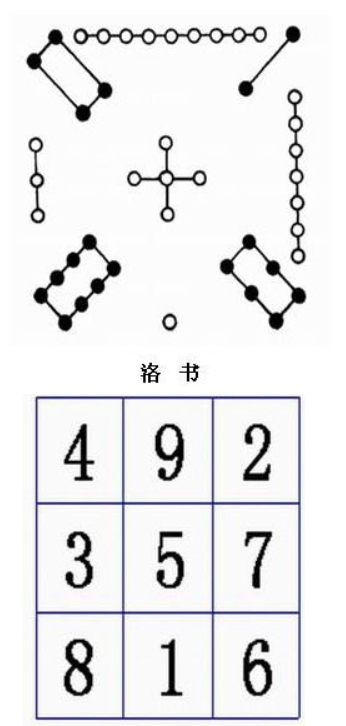

第六章
数组
本章主要内容
- 一维数组
- 二维和多维数组
- 字符数组和字符串
6.1 一维数组
6.1.1 一维数组的定义和使用
- 定义语法
-
元素类型 数组变量名[总元素个数];
- 说明
-
- 数组名的命名规则和变量名一致
- 在定义数组的时候，可以直接指定数组的大小，即数组里面元素的个数，称为数组的长度
#include "stdio.h"
int main()
{
int n,d1[5]={1,6,2}; //定义数组和初始化
scanf("%d",&n); double d2[n]; //C99，可变大小数组
for(int i=0;i<n;i++){ //注意下标从0开始，到n-1
d2[i] = i; printf("%.2lf\n", d[i]);//使用数组
}
//数组和数组元素占内存的实际字节数
printf("%lu,%lu\n", sizeof(d), sizeof(d[0]));
return 0;
}
//输出 4 0.00 1.00 2.00 3.00 32,8
6.1.2 一维数组的初始化
- 数组的初始化
-
在定义数组的时候，给数组元素赋予初值。
int a[4]={1,2,3,4,5]; //完全赋予每个元素初始值
double b[3]={3.14, 1.618}; //部分元素赋初值，其他的都被设置为0
float c[] = { 0.1, 0.4, 0.7} ; //没有设置数组长度，其长度由初始值个数决定
int n[5]={[4]=5, [0]=1, 2, 3, 4}; //c99, n中是：1,2,3,4,5
6.1.3 一维数组的应用实例
例6.1 遍历查找数据
如下表所示的对数表，编写程序进行查找。

#include "stdio.h"
#include "math.h"
#define DELTA 1e-6
int main()
{ double data_x[]={1.0, 1.1, 1.2, 1.3, 1.4,
1.50, 1.6, 1.7, 1.8, 1.9, 2.0};
double data_y[]={0, 0.0414, 0.0792, 0.1139,
0.1461, 0.1761, 0.2041, 0.2304,
0.2553, 0.2788, 0.3010};
double x; int i, flag = 0, n;
n=sizeof(data_x)/sizeof(double);
puts("input x:"); scanf("%lf", &x);
for(i=0; i<n && flag==0; )
if( fabs(data_x[i] - x) < DELTA)flag = 1;
else i++;
if(flag == 1)
printf("%i, log(%.2lf)=%.4lf\n", i,
data_x[i], data_y[i]);
else printf("not found.\n");
return 0;
}
例6.2 冒泡排序法
排序：将一组数按照从大到小或者从小到大的顺序排列。下面是从小到大的基本算法：
- 从第一个元素到最后一个元素，两两进行比较，如果前者 < 后者，则交换二者的位置，直到最大的数移到最后的位置；
- 将最后位置前移一个（即不考虑上一步已经确定位置的最大值），然后重复上一步，直到在这一轮中没有发生任何交换，表明已经排好序。

#include "stdio.h"
#define show_data(d, n) \
for(int t=0;t<n;t++) \
printf("%4d",d[t]); \
putchar('\n');
int main()
{
int data[] = {7,2,3,5,11,6,8,4,9};
int n = sizeof(data)/sizeof(int);
int i,j,flag=1;
show_data(data, n);
for(i=n-1;i>0 && flag!=0;i--){
flag = 0;
for(j=0;j<i;j++){
if(data[j]>data[j+1]){
int t=data[j];
data[j]=data[j+1];
data[j+1]=t;
flag=1;
}
}
show_data(data, n);
}
show_data(data, n);
return 0;
}
例6.3 选择排序法
- 从第一个元素到最后一个元素，找出最大的数的下标，如果该位置的数比最后一个位置的数还大，则和最后一个元素交换二者的位置；
- 将最后位置前移一个（即不考虑上一步已经确定位置的最大值），然后重复上一步，直到只剩下最后一个元素。

#include "stdio.h"
#define show_data(d, n)
for(int t=0;t<n;t++) \
printf("%4d",d[t]); \
putchar('\n');
int main()
{
int data[] = {7,2,3,5,11,6,8,4,9};
int n = sizeof(data)/sizeof(int);
int i,j,max;
show_data(data, n);
for(i=n-1;i>0;i--){
max = 0;
for(j=0;j<i;j++)
if(data[j]>data[max])
max=j;
if(data[max]>data[i]){
int t=data[max];
data[max]=data[i];
data[i]=t;
}
show_data(data, n);
}
show_data(data, n);
return 0;
}
6.2 二维数组
6.2.1 定义和使用二维数组
定义语法：
元素类型 数组名[一维长度][二维长度]; //例子： float data[3][5];
初始化：
int d1[2][3]={{1,2,3},{4,5,6}}; //先行再列，每行用{}来括起来
float d2[2][3]={1.0,2.0,3.0,4.1,5.2,6.3}; //也可以用扁平的方式
char d3[][3]={{'a','b','c'},{'0','1'}};
//注意第一维长度可以省略，由后面的初始化值反推
//第二维长度不能省略
int y[4][3]={{1},{0,1},{[2]=1}};
//y[0]={1,0,0}, y[1]={0,1,0}
//y[2]={0,0,1}, y[2]={0,0,0}
引用二维数组的元素：
double d4[2][3]={0.0}; //定义和初始化
d4[0][1]=3.14; //二维数组元素的赋值
double c = d4[1][2]; //引用元素
6.2.2 二维数组程序举例
例6.2.2.1 找出二维矩阵的最大值。
#include"stdio.h"
int main()
{
int i,j,row,col;
int a[3][4]={{1,2,3,4},{9,8,7,6},{-10,10,-5,2}};
row=0; col=0;
for(i=0;i<3;i++)
for(j=0;j<4;j++)
if(a[row][col]<a[i][j]){
row=i; col=j;
}
printf("max=%d, row=%d, col=%d\n", a[row][col],row,col);
return 0;
}
例6.2.2.2 魔方阵的生成: 奇数阶魔方

奇数n阶魔方阵算法：
- 把1（或最小的数）放在最后一行正中，按以下规律排列剩下的
n×n-1个数； - 每一个数放在前一个数的右下一格；
- 如果这个数所要放的格已经超出了底行那么就把它放在顶行，仍然要放在右一列；
- 如果这个数所要放的格已经超出了最右列那么就把它放在最左列，仍然要放在下一行；
- 如果这个数所要放的格已经有数填入，那么就把它放在前一个数的上一行同一列的格内。
例6.2.2.2 魔方阵的生成: 奇数阶魔方
#include "stdio.h"
//定义最大的魔方阵的阶数
#define MAX_N 15
int main()
{ int magic[MAX_N][MAX_N]={0}, //魔方阵数组
row, col, //行、列下标
old_row, old_col, //上一个循环的行、列坐标
i=1, //填到魔方中的数值
n; //魔方阵阶数
//输入魔方阶数
do{ printf("input n (0<=n<=%d):", MAX_N);
scanf("%d",&n);
}while(n<=0 || n>MAX_N);
//填入第一个数，其位置：最后一行，中间列
row = n-1; col = n/2;
magic[row][col]=i;
//按照算法填充剩下的数到魔方中
while(i<n*n){
//先保存上一次循环的行、列坐标
old_row=row; old_col=col;
//下一个数的位置，其行坐标是下一行
//若下一行已经超过最后一行，则回到第0行
row = (row+1>n-1)?0:row+1;
//下一个数的位置，其列坐标是右一列
//若右一列已经超过最右一列，则回到第0列
col = (col+1>n-1)?0:col+1;
if(magic[row][col]==0)
//若该行、列未填充，则填充并把数+1
magic[row][col]=++i;
else{
//若该行、列已经填充，则
//行是上一个循环的上一行
row = (old_row-1<0)?0:(old_row-1);
//列是上一个循环的相同列
col = old_col;
//在新的行、列坐标填充数，并把数+1
magic[row][col]=++i;
}
}
//输出填充好的魔方阵
for(row=0;row<=n;row++){
int s=0;
for(col=0;col<=n;col++){
printf("%6d",magic[row][col]);
s+=magic[row][col];
}
printf("\t|%d\n", s);
}
printf("-----------------------\n");
for(col=0;col<=n;col++){
int s=0;
for(row=0;row<=n;row++){
s+=magic[row][col];
}
printf("%6d",s);
}putchar('\n');
return 0;
}
生成的几个魔方阵
input n (0<=n<=15):3
4 9 2 |15
3 5 7 |15
8 1 6 |15
-----------------------
15 15 15
input n (0<=n<=15):5
11 18 25 2 9 |65
10 12 19 21 3 |65
4 6 13 20 22 |65
23 5 7 14 16 |65
17 24 1 8 15 |65
-----------------------
65 65 65 65 65
input n (0<=n<=15):7
22 31 40 49 2 11 20 |175
21 23 32 41 43 3 12 |175
13 15 24 33 42 44 4 |175
5 14 16 25 34 36 45 |175
46 6 8 17 26 35 37 |175
38 47 7 9 18 27 29 |175
30 39 48 1 10 19 28 |175
-----------------------
175 175 175 175 175 175 175
6.3 字符数组
- 单纯的字符数组
- 存储字符串的字符数组
- 字符串数组
6.3.1 单纯的字符数组
#include "stdio.h"
int main()
{
char c1[5]={'a','b','c','d','e'}, c2[]={'1','3','5'};
int i;
for(i=0;i<5;i++)putchar(c1[i]);
putchar('\n');
for(i=0;i<sizeof(c2)/sizeof(char);i++)putchar(c2[i]);
return 0;
}
abcde 135
例：多维字符数组的应用: 字体点阵
#include"stdio.h"
int main()
{
char fonts[3][5][5]={
{ {' ',' ','*',' ',' '},
{' ',' ','*',' ',' '},
{' ',' ','*',' ',' '},
{' ',' ','*',' ',' '},
{' ',' ','*',' ',' '}},
{ {'*','*','*','*','*'},
{' ',' ',' ',' ','*'},
{' ','*','*','*',' '},
{'*',' ',' ',' ',' '},
{'*','*','*','*','*'}},
{ {'*','*','*','*','*'},
{' ',' ',' ',' ','*'},
{' ','*','*','*','*'},
{' ',' ',' ',' ','*'},
{'*','*','*','*','*'}}};
int n,i,j;
printf("input n =");
scanf("%d",&n);
for(i=0;i<5;i++){
for(j=0;j<5;j++)
putchar(fonts[n][i][j]);
putchar('\n');
}
return 0;
}
input n =0
*
*
*
*
*
input n =1
*****
*
***
*
*****
input n =2
*****
*
****
*
*****
6.3.2 存储字符串的字符数组
在C语言中字符串会在最后加上一个结尾符'\0'。
#include"stdio.h"
int main()
{
char s[]="Hello";
printf("size = %lu\n", sizeof(s)); //输出6
return 0;
}
6.3.3 存储多个字符串的数组
#include"stdio.h"
int main()
{
char s[][100]={"apple","banana","orange"};
for(int i=0; i<sizeof(s)/sizeof(s[0]));i++)
printf("%s\n", s[i]);
return 0;
}
6.3.4 对字符串的处理
字符串有不少处理，比如：获得字符串的实际长度，字符串的复制，字符串的拼接，字符串的查找，字符串的大小写转换等等，请参见课本158~162页，下面简单举例：
#include"stdio.h"
#include"string.h"
int main()
{
char s1[100]="Hello", s2[50];
printf("%s的字符个数=%d\n",s1,strlen(s1)); //输出：Hello 的的字符个数=5
strcpy(s2, s1); //强烈不建议，有可能会产生溢出
strncpy(s2, s1, 50); //建议，避免溢出
strcat(s2, " world!"); //s2里是"Hello world!"，强烈不建议
strncat(s2, " world!", 50); //建议
strcmp("apple", "banana"); //结果是-1
strcmp("apple", "apple"); //结果是 0
strcmp("orange", "Orange"); //结果是 1
return 0;
}
6.3.4 字符串和数值的转换
字符串和数值可以互相转换，具体参见：https://en.cppreference.com/w/c/string/byte，下面是举例：
#include"stdio.h"
#include"stdlib.h"
int main()
{
char s1[100]="12.34", s2[100]="45";
int a; double b;
a = atoi(s2); //a <-- 45
sscanf(s2, "%d", &a);
b = atof(s1); //b <-- 12.34
sscanf(s1, "%lf", &b);
a = 134; b=3.14;
sprintf(s1, "%d", a); //s1里面是："123"
sprintf(s2, "%lf", b); //s2里面是："3.140000"
return 0;
}
测试和作业
一、判断对错
- C语言的数组下标可以是任意的整数表达式，但必须是≥0 （√）
- 设
double a[3];，则scanf("%lf", a[0]);可以从键盘获得一个双精度浮点数放入第一个数组元素中 （X） float d1[3]={1,3,5}, d2[3]; d2=d1;可以实现数组的整体赋值（X）- 下面的初始化：
short m[5]={,,3,4};可以使得数组元素m[0]被赋值0（X） - 下面的初始化：
short t[3][]={{1,2},{3,4},{5,6}};可以使得初始化二维数组 （X） - 若定义了二维数组
float p[2][3];，则使用二维数组元素第2行，第三列的元素是：p[2,3]（X） - 字符数组
char str[]="cat";的数组长度为3;（X）
二、改错题（每题有5处错误，指出错误的行数，并修改为正确的结果）。
1. 有一个3*4的矩阵，编程求出最大的那个元素，及其行列号
#include "stdio.h";
int Main()
{
int i,j,row=0,col=0,max;
int a[3][4]={
{ 1, 2, 3, 4},
{ 9, 8, 7, 6},
{-10,10,-5, 2}};
max=a[0][0];
for(i=1;i<=3;i++)
for(j=1;j<=4;j++)
if(a[i][j]>max)
max=a[i][j];
row=i;
col=j;
printf("max=%d\nrow=%d\ncol=%d\n",
max,row,col);
return 0;
}
| 行号 | 修正 |
|---|---|
第1行 |
末尾多了; |
第2行 |
Main应该是main |
第10行 |
应该是for(i=0;i<3;i++) |
第11行 |
应该是for(j=0;i<4;j++) |
第12,15行 |
加上{} |
2. 实现strcpy函数的功能，把字符串str1的内容复制到字符数组str2中：
#include "stdio.h"
int main()
{
char str1[10]; str2[6];
scanf("%c", &str1[0]);
int i;
for(i=0;i<10;)
str2[i++]=str1[i++];
printf("%s", &str2);
return 0;
}
| 行号 | 修正 |
|---|---|
第4行 |
str2之前的;应该是, |
第5行 |
%c应该是%s |
第7行 |
应该是for(i=0;str1[i]!='\0';i++) |
第8行 |
应该是str2[i]=str1[i]; |
第9行 |
&str2应该是str2 |
三、单选题
1. 下面程序的运行结果是：( )
#include "stdio.h"
int main()
{
int a[5]={1,2,3,4,5}, b[5]={0,2,1,3,0},i,s=0;
for(i=0;i<5;i++)
s+=a[b[i]];
printf("%d\n", s);
return 0;
}
- 6
- 10
- 11
- 15
2. 下面程序的运行结果是：( )
#include "stdio.h"
#include "string.h"
int main()
{
char st[30]="china ok";
printf("%lu\n",strlen(st));
return 0;
}
- 7
- 8
- 9
- 30
3. 对二维数组的正确说明是：( )
int a[][]={1,2,3,4,5,6};int a[2][]={1,2,3,4,5,6};int a[][3]={1,2,3,4,5,6};int a[2,3]={1,2,3,4,5,6};
4. 下面程序的运行结果是：( )
#include "stdio.h"
#define N 3
#define Y(n) ((N+1)*n)
int main()
{
int z=2*(N+Y(5+1));
printf("%d\n",z);
return 0;
}
- 42
- 48
- 52
- 出错
5. 对字符数组s赋值,不合法的一个是：( )
char s[]="Beijing";char s[20]={"beijing"};char s[20]; s="Beijing";char s[20]={'B','e','i','j','i','n','g'};
6. 下面程序的运行结果是：( )
#include "stdio.h"
int main()
{
int i, a[10];
for(i=9;i>=0;i--)
a[i]=10-i;
printf("%d%d%d",a[2],a[5],a[8]);
return 0;
}
- 258
- 852
- 741
- 369
7. 下面程序的运行结果是：( )
#include "stdio.h"
int main()
{
char alpha[7][30]={
"ABCD","EFGH","IJKL",
"MNOP","QRST","UVWX","YZ"};
int i;
for(i=0;i<4;i++)
printf("%c",alpha[i][i]);
printf("\n");
return 0;
}
- AEIM
- AFKP
- ABCD
- DHLP
课外作业
- 对数列：
4,5,8,13,2,6,19,62,31,27,32,36,21,14,13进行排序（采用冒泡排序或选择排序），并采用折半查找对输入的数进行查找； - 第6题，输出10行杨辉三角；
- 第14题，将两个字符串s1和s2按照ASCII码序进行比较